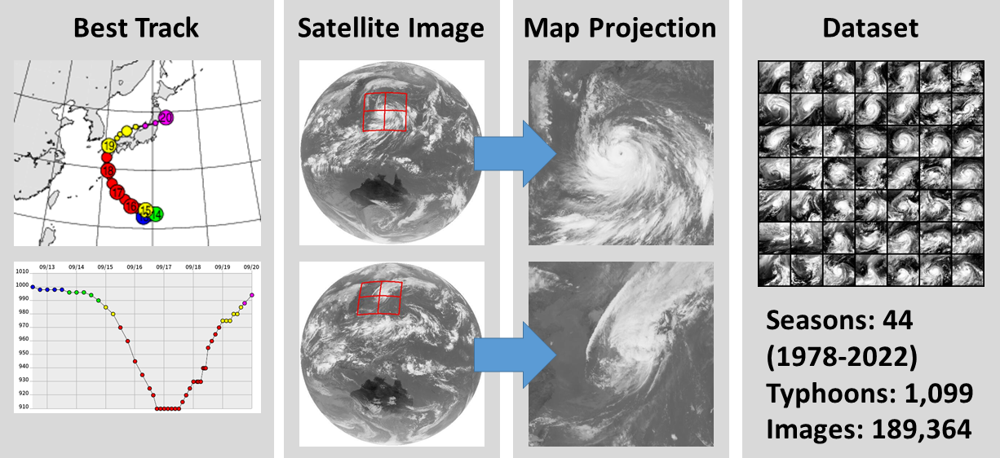
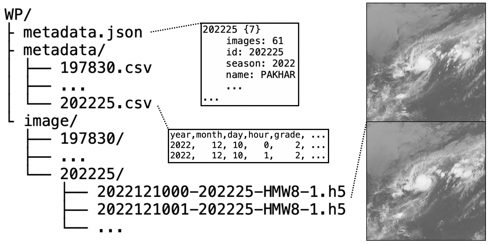

Machine Learning for the Digital Typhoon Dataset
Prof. Asanobu Kitamoto, National Institute of Informatics, 2023
The Digital Typhoon Project was started in 1997, and aims to collect, standardize, and make accessible satellite images of typhoons over the Western North Pacific. It hopes to reduce the burden of researchers to start machine learning on tropical cyclones without solid domain knowledge of meteorology and satellite remote sensing.
I developed Pyphoon2, a PyTorch based dataloader to easily access, filter, and transform dataset images for use in machine learning applications. You can read more and find the code here.
I also led the benchmark experiments for the dataset, including classification and regression of typhoon intensity (wind and pressure), as well as forecasting typhoon intensity and shape.
This work was submitted to NeuRIPS 2023, and is currently in review. You can read more about the project and browse the dataset at the official website.